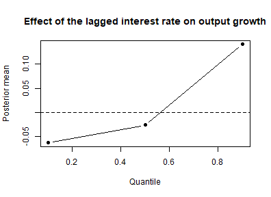

Bayesian Quantile VARs in bvartools
Franz X. Mohr
Source:vignettes/quantile-var.Rmd
quantile-var.RmdIntroduction
A standard VAR describes the conditional mean of a series. A
quantile VAR describes a conditional quantile of it: with
quantile = 0.9 the coefficients say how the upper tail of
each variable moves with the regressors, which need not be how its
middle moves. That is the question behind growth-at-risk exercises and,
more generally, behind any statement of the form “the relationship is
different when things go badly”.
bvartools estimates these models through the asymmetric
Laplace distribution. Minimising the quantile loss at
is the same as maximising the likelihood of an asymmetric Laplace
distribution, and that distribution is a scale mixture of normal
distributions: with
the model
has its -th conditional quantile at . Conditional on the latent scales every equation is an ordinary weighted normal regression, which is what makes this a Gibbs sampler like the others in the package rather than an optimiser (Kozumi & Kobayashi, 2011).
The workflow is the one of the introduction to bvartools
– set up a model, add priors, add initial values, simulate. Only two
things differ, and both follow from the estimand: the specification
carries a quantile, and the prior of the error term is a prior on the
scale
of the asymmetric Laplace rather than on an error variance-covariance
matrix.
Model set-up
Data
Data set at_macrodata contains quarterly macroeconomic
series of Austria. From its domestic series the growth rate of real GDP
(dy), inflation (Dp) and the short-term
interest rate (r) are used, all in percent per quarter and
up to 2019Q4, which leaves out the quarters in which the pandemic moved
output growth by ten percent.
Setting up a model
A quantile VAR is a model with error = "ald". Argument
quantile says which quantile the coefficients should
describe; it defaults to 0.5, the median.
model <- create_bvarmodel(data, p = 1, deterministic = "const",
error = "ald", quantile = 0.25,
iterations = 2000, burnin = 500)
model[["model"]][["algorithm"]]
#> [1] "VarNormalAld"Adding prior hyperparameters
Argument coef works as it does for every other model.
Argument sigma specifies the inverse gamma prior of the
scale of the asymmetric Laplace, one scale per equation, through its
shape and rate.
model <- add_priors(model,
coef = list(v_i = 1),
sigma = list(shape = 3, rate = .01))Adding initial values
set.seed(1234567)
model <- add_initial_values(model, method = "ols")The initial value of each scale is the mean of the check function of the LS residuals, which is the maximum likelihood scale of an asymmetric Laplace given those residuals. The latent scales are redrawn in the first sweep and only have to be positive to weight it.
Obtaining posterior draws
model <- add_posterior_coefficients(model)Evaluation
Summary statistics
summary works as usual and reports the quantile beside
the lag order, so a table cannot be mistaken for one of a mean VAR.
summary(model)
#>
#> Bayesian Quantile-VAR model with p = 1 and q = 0.25
#>
#> Endogenous variables: dy, Dp, r
#>
#> Period: 161
#>
#> Variable: dy
#>
#> Mean SD Naive SD Time-series SD 2.5% 50%
#> dy.l1 -0.05070034 0.07681069 0.001717539 0.003829754 -0.1955109 -0.05341339
#> Dp.l1 -0.18645801 0.21040121 0.004704714 0.011116518 -0.5870609 -0.18858131
#> r.l1 -0.03917954 0.10502845 0.002348508 0.005297084 -0.2524339 -0.03744732
#> const 0.11961806 0.11551694 0.002583037 0.005632198 -0.1089226 0.12320614
#> 97.5%
#> dy.l1 0.1076530
#> Dp.l1 0.2390266
#> r.l1 0.1653208
#> const 0.3426683
#>
#> Variable: Dp
#>
#> Mean SD Naive SD Time-series SD 2.5% 50%
#> dy.l1 0.02427239 0.02836593 0.0006342814 0.001570115 -0.03465764 0.02549824
#> Dp.l1 0.39143351 0.08451684 0.0018898541 0.005123243 0.23374426 0.38998695
#> r.l1 0.14932538 0.05177775 0.0011577857 0.004030321 0.04858781 0.15002001
#> const 0.03422483 0.04817026 0.0010771197 0.002736839 -0.06963914 0.03676856
#> 97.5%
#> dy.l1 0.07931217
#> Dp.l1 0.55580432 *
#> r.l1 0.24873370 *
#> const 0.12479456
#>
#> Variable: r
#>
#> Mean SD Naive SD Time-series SD 2.5%
#> dy.l1 0.03179936 0.008245381 0.0001843723 0.0004369241 0.015824997
#> Dp.l1 0.04844036 0.023006443 0.0005144397 0.0012140855 0.004602469
#> r.l1 0.93839226 0.011157976 0.0002494999 0.0006136322 0.916446482
#> const -0.06005347 0.011175653 0.0002498952 0.0005369631 -0.082898648
#> 50% 97.5%
#> dy.l1 0.03184393 0.04695257 *
#> Dp.l1 0.04819608 0.09398691 *
#> r.l1 0.93836741 0.96043538 *
#> const -0.05999209 -0.03904161 *
#>
#> Variance-covariance matrix:
#>
#> Mean SD Naive SD Time-series SD 2.5%
#> dy_dy 0.925692932 0.642990635 0.0143777077 0.0143777077 0.2033234199
#> dy_Dp 0.000000000 0.000000000 0.0000000000 0.0000000000 0.0000000000
#> dy_r 0.000000000 0.000000000 0.0000000000 0.0000000000 0.0000000000
#> Dp_Dp 0.137292992 0.093405226 0.0020886043 0.0024557246 0.0314118604
#> Dp_r 0.000000000 0.000000000 0.0000000000 0.0000000000 0.0000000000
#> r_r 0.006722717 0.007114527 0.0001590857 0.0001561546 0.0004842506
#> 50% 97.5%
#> dy_dy 0.765535765 2.52794969 *
#> dy_Dp 0.000000000 0.00000000
#> dy_r 0.000000000 0.00000000
#> Dp_Dp 0.113931894 0.38344611 *
#> Dp_r 0.000000000 0.00000000
#> r_r 0.004518018 0.02569591 *Does it estimate the quantile it was asked for?
This is worth checking, because a quantile model that has lost its skew term somewhere estimates the median instead and looks perfectly healthy while doing it. The defining property of the estimand is that the share of fitted residuals below zero is the quantile:
share_below_zero <- function(object) {
a <- colMeans(object[["posterior"]][["a"]][["coeffs"]])
# y holds one row per period and z one block of rows per period
y <- matrix(t(object[["data"]][["train"]][["y"]]))
z <- object[["data"]][["train"]][["z"]]
mean(y - z %*% a < 0)
}
share_below_zero(model)
#> [1] 0.2463768A grid of quantiles
One model is one quantile. A vector in argument quantile
therefore produces a list of models, in the same way a vector of lag
orders does, and that list runs through the same functions:
models <- create_bvarmodel(data, p = 1, deterministic = "const",
error = "ald", quantile = c(0.1, 0.5, 0.9),
iterations = 2000, burnin = 500)
models <- add_priors(models,
coef = list(v_i = 1),
sigma = list(shape = 3, rate = .01))
set.seed(1234567)
models <- add_initial_values(models)
models <- add_posterior_coefficients(models)Each model estimates its own quantile:
data.frame(quantile = sapply(models, function(x) {x[["model"]][["quantile"]]}),
share_below_zero = round(sapply(models, share_below_zero), 3))
#> quantile share_below_zero
#> 1 0.1 0.093
#> 2 0.5 0.497
#> 3 0.9 0.903The shares sit near their quantiles rather than on them. With 161 observations per equation one of them is worth 0.6 percentage points, and these are posterior means under an informative prior rather than the frequentist estimator, whose first order condition would pin the share exactly. What a model that had lost its quantile would show is different in kind: three shares near 0.5.
Comparing one coefficient across the grid is what the exercise is usually for. The following extracts the posterior mean of the effect of the lagged short-term interest rate on output growth at each quantile:
coefficient <- function(object) {
colMeans(object[["posterior"]][["a"]][["coeffs"]])[7]
}
quantiles <- sapply(models, function(x) {x[["model"]][["quantile"]]})
estimates <- sapply(models, coefficient)
plot(quantiles, estimates, type = "b", pch = 19,
xlab = "Quantile", ylab = "Posterior mean",
main = "Effect of the lagged interest rate on output growth")
abline(h = 0, lty = "dashed")
plot of chunk coefficient-by-quantile
Since the models are independent of each other, a grid of this kind can be estimated in parallel without the samplers knowing about it.
Time varying parameters
Adding tvp = TRUE lets the coefficients follow a random
walk, which separates “the tail became noisier” from “the relationship
in the tail changed” – two different claims about the same widening fan.
The state equation needs a prior, exactly as it does for the other time
varying models.
tvp_model <- create_bvarmodel(data, p = 1, deterministic = "const",
error = "ald", quantile = 0.25, tvp = TRUE,
iterations = 2000, burnin = 500)
tvp_model <- add_priors(tvp_model,
coef = list(v_i = 1, shape = 3, rate = .0001),
sigma = list(shape = 3, rate = .01))
set.seed(1234567)
tvp_model <- add_initial_values(tvp_model)
tvp_model <- add_posterior_coefficients(tvp_model)
tvp_model[["model"]][["algorithm"]]
#> [1] "VarTvpAld"What these models do not do
Three things, each on purpose rather than for want of an implementation.
No error covariances. error = "ald"
estimates no covariance block, and asking for one is refused. The
covariance block of the other models is a triangular rotation of the
errors, and rotating the equations into each other is exactly what stops
the estimand being a quantile: the rotated residual is a combination of
equations, and the
-th
quantile of a combination is not the combination of
-th
quantiles.
No forecasts. add_posterior_forecasts
refuses a quantile model:
add_posterior_forecasts(model)
#> Error in `add_posterior_forecasts.bvarmodel()`:
#> ! A quantile regression model does not forecast: the h step ahead quantile is not the quantile of the iterated one step ahead quantiles, so a simulated path could not be read as a quantile of anything.The reason is not a missing algorithm. The step ahead quantile is not the quantile of the iterated one step ahead quantiles, so a simulated path could not be read as a quantile of anything.
No calibrated credible intervals. The asymmetric Laplace is a working likelihood, not a claim about the data. The posterior locates the quantile, but the spread of the draws is not a credible interval without the sandwich adjustment of Yang, Wang and He (2016), which the package does not apply. Read the spread as a diagnostic.
Variable selection is available as varsel = "bvs". SSVS
is not implemented for these models and is refused when the
specification is made.
Citing bvartools
If you use bvartools in published work, please cite it.
citation("bvartools") prints the reference, and the package
has the DOI 10.5281/zenodo.22736604,
which always resolves to the latest archived version.
References
Kozumi, H., & Kobayashi, G. (2011). Gibbs sampling methods for Bayesian quantile regression. Journal of Statistical Computation and Simulation, 81(11), 1565-1578. https://doi.org/10.1080/00949655.2010.496117
Korobilis, D. (2013). VAR forecasting using Bayesian variable selection. Journal of Applied Econometrics, 28(2), 204-230. https://doi.org/10.1002/jae.1271
Yang, Y., Wang, H. J., & He, X. (2016). Posterior inference in Bayesian quantile regression with asymmetric Laplace likelihood. International Statistical Review, 84(3), 327-344. https://doi.org/10.1111/insr.12114